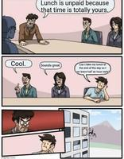

Nvidia CEO Jensen Huang says the company plans to spend around $150 billion a year in Taiwan, calling it the "epicenter of the AI revolution." "Four years ago, five years ago, Nvidia was spending about $10, $15 billion dollars a year in Taiwan. Now we're spending $100, going to $150 billion dollars in Taiwan each year," Huang said. Reuters reports: Huang was speaking at a launch celebration in Taipei for the chip company's planned Taiwan headquarters, which he said will break ground this year and aims to become operational in 2030. He did not provide a timeframe for the number of years the company plans to invest $150 billion. The Taiwan headquarters will bring Nvidia closer to TSMC, the world's largest contract chipmaker which makes many of the advanced semiconductors powering the trend towards AI and is a major supplier to the U.S. tech company.
"Taiwan is booming," Huang said on stage at the celebration which was attended by his parents, wife, daughter and son in addition to around 1,000 employees. "Taiwan is the epicentre of the AI revolution. This is where the chips come, packaging comes, this is where the systems are made, this is where AI supercomputers were created. The number of partners we work with here in Taiwan, incredible."
Read more of this story at Slashdot.
YouTube will begin automatically labeling videos when its systems detect "significant" photorealistic AI use, while also making AI-content disclosures more visible below long-form videos and directly on Shorts. "We've heard consistently from our community that they value transparency when it comes to generative AI content," YouTube said in a blog post. "These changes are designed to balance transparency with creator control." Variety reports: Under YouTube's guidelines, creators will still be required to manually disclose when they use realistic AI. But starting this week, it also will roll out a new internal system to help identify AI-generated content. "If a creator doesn't specify whether or not they used AI, but our systems detect significant photorealistic AI use, we will now automatically apply a label," YouTube said.
YouTube creators who believe their content was incorrectly flagged as AI-generated can modify the disclosure status using the YouTube Studio tool. However, according to YouTube, the AI labels will "remain permanent" in some cases, including for content created using YouTube's own AI tools (such as Veo or Dream Screen) and for content that contains C2PA metadata (based on standards from the Coalition for Content Provenance and Authenticity) that indicates it was fully AI-generated.
In addition, YouTube is moving the disclosure label for photorealistic and meaningfully AI-altered or AI-generated content to a more prominent position. Until now, YouTube labeled AI content in a video's expanded description. Going forward, for long-form videos, the AI label will now appear directly below the video player and above the description. For YouTube Shorts, the label will appear as an overlay on the video itself. "The goal here is context at a glance. If it looks real but was made with AI, viewers will know immediately," said Rene Ritchie, YouTube head of editorial and creator liaison. He added that the AI labels alone "do not affect how our videos are recommended or whether they can earn money. This is purely about giving viewers the right information at the right time."
Read more of this story at Slashdot.
Dropbox founder Drew Houston is stepping down as CEO after 19 years and will become executive chairman, with product chief Ashraf Alkarmi set to take over after a co-CEO transition period. CNBC reports: Drew Houston founded Dropbox
nearly two decades ago at age 24, eventually becoming a household name in Silicon Valley and the first tech entrepreneur to take a company from the Y Combinator incubator program all the way to the public market. Now, at 43, Houston is ready to do something else. [...]
By almost any measure, Houston has had a great run at Dropbox, helping pioneer the cloud storage market, competing head-to-head with Google and Apple and building a net worth of more than $2 billion, thanks to substantial ownership in his company. But in the land of outsized expectations, Houston has overseen a company that peaked too soon and never became a generation-defining brand.
Dropbox's current market cap of just over $6 billion is down by half from the high price on its first day of trading in 2018, and is below the $10 billion valuation it was ascribed by private market investors in 2014. [...] In its latest quarterly earnings report, Dropbox said it has more than 18 million paying users, and the service remains popular with media professionals, graphic designers, architects, and others who share files and photos as part of their daily work. "Part of me has always thought, oh yeah, I'll be the CEO of Dropbox until my last gasp of my career," he said. "There's never a perfect time, there was no part of me where I was like, 'oh, this date is the date where it's going to happen.'"
Since Alkarmi joined Dropbox from Vimeo in late 2024, the company has "become a lot more responsive to our customers and is taking bigger swings on innovation," Houston said. "I trust the right leader," he said. "The company's in the right place."
Read more of this story at Slashdot.
joshuark writes: BusPatrol, a company that has installed AI-powered cameras in tens of thousands of school buses around the U.S., now plans to turn those cameras into automatic license plate readers (ALPRs), capturing the location of every vehicle the buses drive past, and give that data to law enforcement, 404 Media has learned. BusPatrol has already taken steps to share the collected data with law enforcement contracting giant Axon, according to leaked BusPatrol documents and a source with knowledge of the plans. BusPatrol has acknowledged how controversial its plan to collect and share this data is, pointing specifically to concerns about ICE using license plate data, but emphasizes the likely success of selling the angle of protecting children.
"Who would have thought that school buses would be turned into the mass surveillance state?," Michael Soyfer, an attorney from the Institute for Justice, which has various ongoing ALPR-related lawsuits The Institute for Justice argues that warrantless use of ALPR systems is unconstitutional, describing similar systems as a "dragnet." Kate Spree, senior manager of brand communications at BusPatrol, said in an email "This inquiry is based on a false premise and inaccurate information. BusPatrol does not pool or sell data across communities; student safety program data is used only to support the BusPatrol program in the community where that data was created." When 404 Media asked clarifying questions and said that the reporting is based on leaked BusPatrol material, Spree stopped replying to text messages and emails. This plan gives new meaning to the animated cartoon series "The Magic School Bus"...
Further reading: FBI Wants to Buy Nationwide Access to License Plate Readers
Read more of this story at Slashdot.
An anonymous reader quotes a report from Reuters: Elon Musk's Starlink and Amazon's low-earth-orbit satellite business may be able to acquire some European mobile satellite spectrum next year, two people with direct knowledge of the matter said on Tuesday. But they said two-thirds of the satellite spectrum that allows mobile devices and vehicles to communicate seamlessly even in remote locations, would be reserved for European companies.
U.S. companies Viasat and EchoStar hold licenses that are due to expire in May 2027 and the European Commission has been considering how to allocate future spectrum at the same time as the bloc pushes to reduce reliance on U.S. tech. The European Union's IRIS2 multi-orbit array of 290 satellites, a response to Starlink, will be among the European companies to receive some spectrum, the sources said. British and Norwegian companies can also bid for a license, the people said. Details of the proposal, set to be announced on Wednesday, could still change at a meeting of commissioners on the day, one of the sources. Commission spokesman Thomas Regnier said EU-wide satellite connectivity was "synonymous with resilience, security, and capability" given the current geopolitical context.
"Satellite connectivity is a key piece of our technological sovereignty, our security, and our defense, as also highlighted by IRIS2," he added.
Read more of this story at Slashdot.
American Airlines plans to install SpaceX's Starlink Wi-Fi on more than 500 narrow-body Airbus aircraft starting early next year. It does not, however, have any immediate plans to change providers on its Boeing fleet, which currently uses a mix of Viasat and Panasonic. CNBC reports: American in January rolled out free in-flight Wi-Fi for members of its frequent flyer program, following United Airlines, Delta Air Lines and others. Delta in March said it would use Amazon Leo for in-flight Wi-Fi for hundreds of jets starting in 2028. United, Southwest Airlines and Alaska Airlines, which merged with Hawaiian Airlines in 2024, have selected Starlink. The move is a big win for SpaceX as it prepares for a potentially massive IPO next month. SpaceX said Starlink and its connectivity business generated $11.39 billion in revenue last year, accounting for 61% of the company's total sales.
Read more of this story at Slashdot.
An anonymous reader quotes a report from Wired: Aerodynamic drag is a major "barrier" in high-speed airplanes, automobiles, and bullet trains. This is because a design with less aerodynamic drag allows the aircraft to move at higher speeds with less energy. When an aircraft or car body moves at high speed, a thin layer of air called the "boundary layer" is formed on its surface. This boundary layer has two states: laminar flow, in which air flows in an orderly fashion, and turbulent flow, which involves turbulence. The longer the air stays in the laminar flow state with low friction, the smaller the air resistance becomes, but as the air speed increases, it transitions to turbulent flow. The key to reducing aerodynamic drag is how to delay this transition to turbulence.
For more than 80 years, the principle of "the surface of an object must be smooth" has been the basic premise of aeronautical engineering throughout the world in order to suppress the transition to turbulence and reduce aerodynamic drag. This premise was based on the results of a 1940 study by Ichiro Tani, a Japanese aerodynamicist who quantitatively demonstrated the relationship between "surface roughness" (an indicator of the state of the machined surface) and turbulent transition, arguing that surface roughness, which was unavoidable with the manufacturing technology of the time, prevented laminar flow from being realized. However, in 1989 Tani reinterpreted the experimental data on rough-surface pipes obtained by fluid engineer Johann Nikulase in the 1930s, bringing a new perspective that "roughness may not necessarily only promote turbulent transition and increase fluid resistance." Inheriting this idea, a research group led by Yasuaki Kohama of Tohoku University experimentally demonstrated in the 1990s that fibrous rough surfaces, which have fine fibrous irregularities on their surface, have the effect of delaying transition under certain conditions.
The same Tohoku University research team recently announced a discovery that significantly advances this trend. Aiko Yakino, associate professor at Tohoku University's Institute of Fluid Science, and her research group were the first in the world to demonstrate that aerodynamic drag can be reduced by up to 43.6 percent simply by applying distributed micro-roughness (DMR), a surface roughness so fine and irregular that it cannot be distinguished by the naked eye. This technology is fundamentally different from the "rivulet (shark skin) process," which is known as a typical aerodynamic drag reduction technology. The rivulet process mimics the fine longitudinal grooves in shark skin, and by carving grooves approximately 0.1 mm wide along the direction of airflow, it aligns the vortices that occur near the wall surface of turbulent airflow areas. DMR, on the other hand, delays the switch from laminar to turbulent flow by means of random and minute irregularities. The flow zones it affects and the mechanisms it employs are based on completely different concepts.
Read more of this story at Slashdot.
ETH Zurich researchers say they have generated certified "perfect randomness" for the first time by using a quantum Bell-test setup with two entangled superconducting chips connected by a 30-meter cooled link. "In the long term, this work could play a similar role in digital security as atomic clocks do for timekeeping: a physically certified source of randomness that other systems can rely on," reports Phys.org. "Possible applications range from the encryption of sensitive communications and digital identities to public randomness services for lotteries and blockchain applications." From the report: They call their method randomness amplification. "This was made possible by an improved so-called Bell-Test with simultaneously high quality and high data rate," says [Renato Renner and Andreas Wallraff]. He and his coworkers use a complex setup that consists of two superconducting chips, which they cool down to very low temperatures close to absolute zero. Each chip represents a quantum bit or qubit, which can take on the states "0" or "1" or any arbitrary superposition of these states. A 30-meter-long tube, which is also cooled down, connects the two chips.
Microwave photons can fly back and forth between them, thus creating quantum mechanical entanglement. This means that a quantum measurement on one qubit, which randomly yields the values "0" or "1," influences automatically and at a distance whether "0" or "1" is measured on the second qubit. The separation of 30 meters ensures that, during the measurement, even at the speed of light, no information can be exchanged between the qubits. This would disturb the perfect randomness.
Wallraff and his team made the choice of the exact type of measurement (or "measurement basis" in technical jargon) on the two qubits depending on an imperfect random number generator. Renner's coworkers could then amplify the randomness of the measurement results further using a special algorithm. "The resulting sequence of zeros and ones is now really perfectly random, and we can even certify that," says Renner. He likens this result to crossing a ridge: "The technical improvements allowed us, for the first time, to create random numbers that will remain perfectly random for all eternityâ"no matter what analytical methods are used to assess their randomness."
The findings have been published in the journal Nature.
Read more of this story at Slashdot.
An anonymous reader quotes a report from Ars Technica: Now sites have a new way to spy on their visitors: measuring subtle interactions with their solid-state drives. The technique, named FROST (fingerprinting remotely using OPFS-based SSD timing), allows sites to monitor other sites a visitor is viewing and what apps are open on their devices. The technique, laid out in a research paper (PDF), exploits a side channel, a form of leak resulting from physical manifestations such as electromagnetic emanations, data caches, or the time required to complete a task. By measuring the manifestations, attackers can decrypt encrypted traffic and infer other confidential data.
The attack that FROST uses is known as a contention side channel, which measures the interaction of various processes all using (or competing for) a given resource. By measuring the timing of certain I/O (input-output) operations of the SSD a visitor is using, the researchers were able to determine the websites open in other tabs -- even on other browsers -- and the apps that were open on the visitor's device. FROST requires no interaction from the visitor other than opening the site hosting the attack. [...] Unlike previous contention side-channel attacks on SSDs, FROST runs exclusively in the browser. It uses JavaScript that interacts with the OPFS (origin private file system), an allocated storage space that's reserved for a specific site to run code needed to complete a given task. Websites can create one with no interaction required by the visitor.
While each file system is sandboxed, meaning it's isolated from other websites and from the device system itself, the JavaScript can measure the I/O interactions. Then, by running those interactions through a pretrained convolutional neural network -- a system that uses deep learning to analyze text, audio, and images -- the attacker can deduce various apps and websites open on the device. "The attacker continuously measures SSD contention by performing random reads from a large OPFS file," the researchers explained. "SSD contention caused by user activity causes measurable latency differences for these read operations. By training a convolutional neural network (CNN) on these traces, the attacker can fingerprint user activity on the host system by classifying new traces using the trained model."
Read more of this story at Slashdot.
Meta will begin testing paid subscriptions for its Meta AI app and website, with a $7.99/month Meta One Plus plan and a more capable $19.99/month Meta One Premium plan offering. The test will start next month in Singapore, Guatemala, and Bolivia as Meta looks for AI revenue beyond advertising while continuing to offer a free tier. CNBC reports: Naomi Gleit, the head of product at Meta, revealed the subscription testing in an Instagram video, announcing that the plans "give people who use Meta AI more to work with, more capacity, bigger, more complex requests, and more room to create for businesses and creators."
Meta One Plus will cost $7.99 a month and the Meta One Premium plan will cost $19.99 a month, the company confirmed. The more expensive version offers users additional computing capacity to produce more comprehensive responses and other advanced features. The company will continue to provide a free version of the app and site.
"We're offering premium tools that allow you to enhance presence, supercharge content, automate tasks, and protect your brand," Gleit said in the post. "We're also thinking about how to bring this all together in a way that makes sense."
Read more of this story at Slashdot.
An anonymous reader quotes a report from The Verge: How newsrooms should use AI -- or if they should at all -- has been a recurrent debate within the media industry over the last several years. Increasingly, these rules are being hammered out at the bargaining table between unions and publishers. Right now, employees at The New York Times are gearing up for a fight. Unionized staff with the Tech Guild say Times management has refused to provide the union with information related to how the company has used AI, its plans for AI use in the future, and how it will affect employees' jobs and workflow. (The union filed an unfair labor practice charge earlier this month.) The Tech Guild, a NewsGuild of New York unit of around 700 software engineers, designers, product and project managers, and data analysts, also filed grievances saying Times management violated their collective bargaining agreement when it started using two internal AI tools that track and evaluate employee performance and activity.
[...] Both the Tech Guild and the Times Guild (which represents 1,500 editorial, ad sales, and support staff at the Times) filed unfair labor practice charges against the Times, saying that company violated labor law by refusing to respond to their requests for information around AI use at the outlet. The Times did not respond to specific questions about how it uses DX and Glean, but spokesperson Danielle Rhoades Ha said in an email that the company disagrees with the characterizations made in grievances and that it would respond as part of its "normal contractual process." "Likewise, we will respond to this Request for Information (RFI) in due course as we've done with 80+ other RFIs from the Guild in recent years," Rhoades Ha said.
The Times Guild is currently bargaining a new contract, pushing for robust protections against AI, like requirements that a human is behind any AI tool being used, that any journalism utilizing AI is transparently labeled, and that staff are compensated for AI model training deals the company might make. The Times deploys artificial intelligence tools for some reporting, like using it to parse millions of documents related to Jeffrey Epstein or scan satellite images of Gaza to try to find where Israel had dropped a specific kind of bomb. [...] [Ben Harnett, a software engineer at the Times and chair of the unit's generative AI committee] emphasizes that the unit's position is not that AI shouldn't ever be used, but that workers should have a say in how it's deployed. Metrics like how many tokens an employee uses or how often they're using AI to do their jobs create pressure to do more and incentives that don't align with doing quality work. "It's going to distract [you] from actually doing a good job, which is what we think the company should want," he says. Two of the contentious AI tools mentioned in the report are DX and Glean. DX is an engineering productivity tool that tracks a developer's output, generative AI use, efficiency, and other related metrics. Meanwhile, Glean is an internal knowledge-search tool that indexes materials like wikis, GitHub documents, Google Docs, and emails so employees can query company information.
The concern, according to Times Tech Guild members, is that data meant to measure broader developer experience is now being applied to individuals and cited in performance or disciplinary contexts. There's also worry that it could be used to monitor individual contributions and produce false or misleading results.
Read more of this story at Slashdot.
Roku is rolling out its first major homescreen update in a decade. The UI doesn't look too dramatically different, but users will notice more personalization-driven changes, including frequently used apps, "top picks," household-specific layouts, and recommendations based on viewing habits. Rest assured, Engadget adds, "Everything is still in various shades of purple and Roku City is still available as a screensaver." From the report: Today's update certainly brings more clutter into the mix, including a new "marquee" ad spot that takes up a large chunk of the screen. It's worth remembering that Roku makes most of its money on ads and not its hardware. "More than 100 million households will feel the difference the moment they turn on their TV -- and it opens up a better, more powerful experience for our partners as well," CEO Anthony Wood wrote in a blog post.
The update does bring one novel feature, according to The Hollywood Reporter. The company says the new homescreen platform will adapt to how households use Roku devices. This is to accommodate "multiple people living in homes." For instance, a child's bedroom TV might have a different homescreen than TV in the living room, and so forth. This expansion is rolling out right now to US-based customers, though it might take a while to reach every user. Roku says "additional countries will follow in the coming months."
Read more of this story at Slashdot.
An anonymous reader quotes a report from TechCrunch: There is a certain wildness in the tech industry these days that both mimics previous eras of large changes, like cloud computing (runaway costs in the early days), and is like nothing we've ever seen before (record revenues accompanied by mass layoffs). One possible explanation: tech executives, especially CEOs, are collectively suffering from delusions of AI grandeur. And at least one tech CEO has said as much out loud: Box founder Aaron Levie.
"CEOs are uniquely prone to AI psychosis because they're sufficiently distant from the last mile of work that still has to happen to generate most value with AI," Levie wrote on X. CEOs "play with AI," develop a prototype, or generate a contract, to use Levie's examples, and then make the leap to believing agents can do the work. But these top-level executives aren't the people who have to review code, discover bugs, and identify calls to hallucinated libraries before software is deployed. They aren't responsible for training AI models on a company's idiosyncratic contract terms, nor do they have to spend days combing through contracts to find sneaky terms, as Levie indicates.
In other words, Levie's theory posits, CEOs don't really understand processes well enough to know what really can and can't be automated. But that lack of knowledge doesn't stop them from acting on their beliefs. [...] So what are CEOs to do instead? Levie advises CEOs to use AI "a ton" to really see what it can and can't do, "and come out the other side with an appreciation for both the upside and the real work."
Read more of this story at Slashdot.
Hobbyist CNCDan is trying to build a real-world version of Windows' classic 3D Pinball for Windows -- Space Cadet, using 3D-printed flippers, bumpers, LEDs, slingshots, and a raised playfield modeled after the original virtual table. But in bringing the digital table into the real world, CNCDan has already run into several physical challenges the software never had to contend with... Ars Technica reports: After scaling and skewing the on-screen, perspective-shifted view of the Space Cadet playfield onto a 1-meter-tall table, he ended up with a rectangular playfield just 56 cm wide. That's on the smaller side for commercial pinball tables and maps to playfield bumpers that are just 53 mm wide -- way smaller than any prebuilt bumpers that are commercially available.
Once CNCDan dealt with issues with unreliable plastic microswitches for those tiny bumpers (Hall effect magnets seemed to help), he ran into a separate problem with the even smaller bumpers on the raised playfield. The wiring for those bumpers had to be arranged very carefully to avoid blocking a kickback return alley underneath, a positioning problem that the original designers of the virtual table didn't have to consider at all. CNCDan also ended up adding a physical mechanism to simulate the short delay 3D Space Cadet players may remember, when the ball dropped down a hole from the raised playfield back to the flippers below.
CNCDan says he's currently looking for artists to help him with a hand-drawn re-creation of the original Space Cadet playfield, which he doesn't want to use AI for. "I'm sure [AI] can do it, but I'd much rather give this job to a real human being," he said in the video.
Read more of this story at Slashdot.
Linux stable kernel maintainer Greg Kroah-Hartman says Rust can help Linux deal with a flood of AI-discovered security bugs (namely Dirty Frag, Copy Fail, and Fragnesia) by preventing common C mistakes around memory, locking, error handling, and untrusted data at build time rather than during human review. It's "not a silver bullet" and does not mean rewriting the whole kernel, but he said new drivers and subsystems will increasingly use Rust as Linux evolves forward. ZDNet reports: Kroah-Hartman illustrated those pitfalls with real C bugs in the kernel, including a 15-year-old Bluetooth bug that dereferenced a pointer without checking it and a Xen bug where "we forgot to unlock" in an error path. "The majority of the bugs in the kernel are this tiny, minor stuff," he explained. "Error conditions aren't checked, locks aren't forgotten, unreleased memories leak, and vulnerabilities add up over time. They crash the kernel. This is what we live with in C. This is why we don't like it." Kroah-Hartman argued that the "best beauty of Rust" is catching those mistakes at build time rather than in review. For example, when it comes to locking, he highlighted Rust's locking abstractions in the kernel: "The only way you can get access to inner pointers of structures is by grabbing that lock, and releasing the lock automatically. The compiler does it, it's guarded, the lock happens, everything's happy. You just can't write code to access these values...without grabbing the lock. The compiler will not let you."
Those properties, he argued, directly remove a huge fraction of the bugs he sees: "This is going to save us those two things. First, 60% of the bugs in the kernel right there, they're gone. Thank you." The payoff is earlier, more automated enforcement: "If this happens at build time, not review time, don't make me a maintainer who has to read your code [and] say, 'Oh, then you properly check that error value. Oh, did you properly grab the locks in the right spot?' Rust gives us that for free. This is the best thing ever." Even if Rust vanished tomorrow, Kroah-Hartman argued, it has already forced the kernel to clean up C code and interfaces. He credited Rust's influence outright: "We stole this from Rust. Thank you. It's a good idea, so if Rust disappeared tomorrow, we have cleaned up the C code in the kernel so much and taken in the ideas. We thank you, you've made Linux better with it just by existing."
[...] What ultimately sold a number of core maintainers, including him, on Rust was how it "makes reviewing code easier." With CI [Continuous Integration] bots enforcing builds and Rust's type system enforcing key invariants, maintainers can "focus on the logic" rather than resource bookkeeping: "I can care about that one function. I don't have to worry about the rest of this stuff, because I assume that it works properly, because it was built properly." Internally, he said, the top maintainers have already made their call on Rust's status: "The Linux kernel maintainers, we get together every year and talk about what the processes are doing. Last year, we said the Rust experiment is over. It's not an experiment. This is for real." The rationale: "The people behind it are real. We trust them. We know what they're doing. They've shown and put in the work to make Rust a viable language in the kernel, and we're going to make this stick. Let's go full speed ahead. And, as always," he said wryly, "world domination proceeds."
"If you never remember anything else in my talk, just remember these four words. It came from Microsoft Security many, many years ago," Kroah-Hartman told attendees. "They realized all input is evil. You have to validate all input."
Read more of this story at Slashdot.
Wall Street Journal : As Google plans to build a $15B AI data center hub in India's Visakhapatnam, locals and rights groups are raising concerns over “extremely high” water stress — Developing-world nations are offering billions of dollars in incentives for U.S. data centers, but locals say the cost is too high
Foo Yun Chee / Reuters : The European Commission fines Temu €200M under the DSA for allegedly failing to adequately stop the sale of illegal products; further penalties could follow — Chinese online retailer Temu has been fined €200 million ($232 million) on Thursday for not doing enough to stop the sale …
Jeremy Kahn / Fortune : London- and SF-based Orbital Industries, which uses its Orb model to design advanced materials and then sell them directly, raised a $50M Series B led by Plural — Orbital Industries, a startup using AI to design advanced materials, has raised a $50 million Series B funding round led by the venture capital firm Plural.
Bloomberg : Internal speech: JD.com founder Liu Qiangdong vows to protect the company's 900,000 employees from AI and automation, saying it will “do everything possible” — JD.com Inc. founder Liu Qiangdong vowed to prevent the e-commerce firm's 900,000-strong workforce from losing their jobs to automation …
Bloomberg : The European Commission launches a full review of JD.com's €2.2B acquisition of German electronics retailer Ceconomy under its Foreign Subsidies Regulation — Chinese e-commerce firm JD.com Inc.'s offer to acquire Germany's Ceconomy AG has been hit by an in-depth probe by European Union watchdogs …
Chris Vallance / BBC : UK researchers win access to Google's Willow quantum chip, which it says completes a calculation in five minutes that takes supercomputers 10 septillion years — Scientists from King's College London have become the first UK academic research team to gain access to Google's cutting-edge …
Paul Sandle / Reuters : Dealroom: London overtakes Paris to reclaim its position as Europe's leading tech hub, and now ranks fourth globally; London startups raised $17.7B in 2025 — London has reclaimed its position as Europe's leading technology centre, overtaking Paris thanks to increased investment …
Sam Schechner / Wall Street Journal : Mistral says it is accelerating superintelligence development to ensure Europe's independence from US tech giants, and signs deals to supply Airbus and BMW — French company's CEO says its—and Europe's—biggest obstacle to tech independence is the scale of investment necessary
Svea Herbst-Bayliss / Reuters : Chip design software maker Synopsys reaches a deal with Elliott, giving one board seat to the activist investor's Jesse Cohn, after roughly two months of talks — Chip design software maker Synopsys (SNPS.O) has reached an agreement with activist investor Elliott Investment Management …
Financial Times : Sources: Australia-founded Airwallex, which Keith Rabois accused of being a “Chinese backdoor”, is relocating some staff out of China amid its US expansion — Australia-founded Airwallex is pursuing US expansion amid intensifying rivalry between Washington and Beijing
Rivaldo Jantjies / Bloomberg : As the US AI boom drains venture capital from Africa, startups on the continent are pivoting to domestic funding sources, like pension funds and local VC firms — African startups are rewriting their funding playbook as the global artificial intelligence boom pulls venture capital toward the US …
Jonas Ekblom / Bloomberg : Swedish chip optical component maker Sivers, whose stock is up ~1,700% YTD, giving it a ~$2.5B market cap, has become one of the country's most-shorted stocks — A small Swedish semiconductor firm that's soared about 1,700% this year has become one of the country's most-shorted stocks.
Simon Willison / Simon Willison's Weblog : Anthropic and OpenAI seem to have finally found product-market fit with coding agents, which are quickly becoming daily drivers for highly paid professionals — Anthropic are strongly rumored to be about to have their first profitable quarter. Stories are circulating of companies surprised …
Nikkei Asia : Surging AI demand causes shortages and price increases across the entire optical supply chain, from lasers and substrates to optical fibers and connectors — TAIPEI — Having already driven massive shortages in memory chips and CPUs, the global artificial intelligence boom is now disrupting …
Reuters : Sources: ByteDance is developing its own CPUs to support its growing AI infrastructure needs, as chip price hikes and supply shortages constrain expansion plans — Chinese technology giant ByteDance is developing its own central processing units (CPUs) to support its growing AI infrastructure needs …